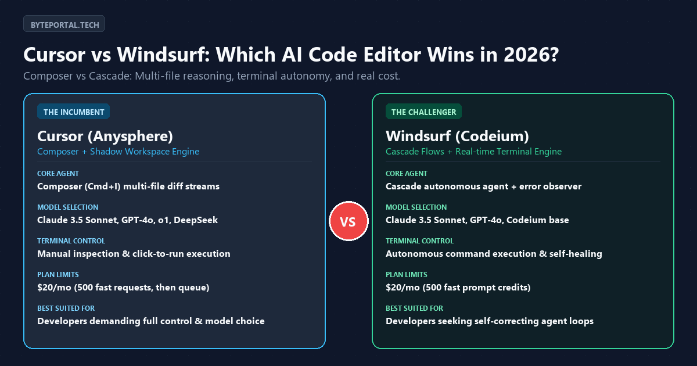
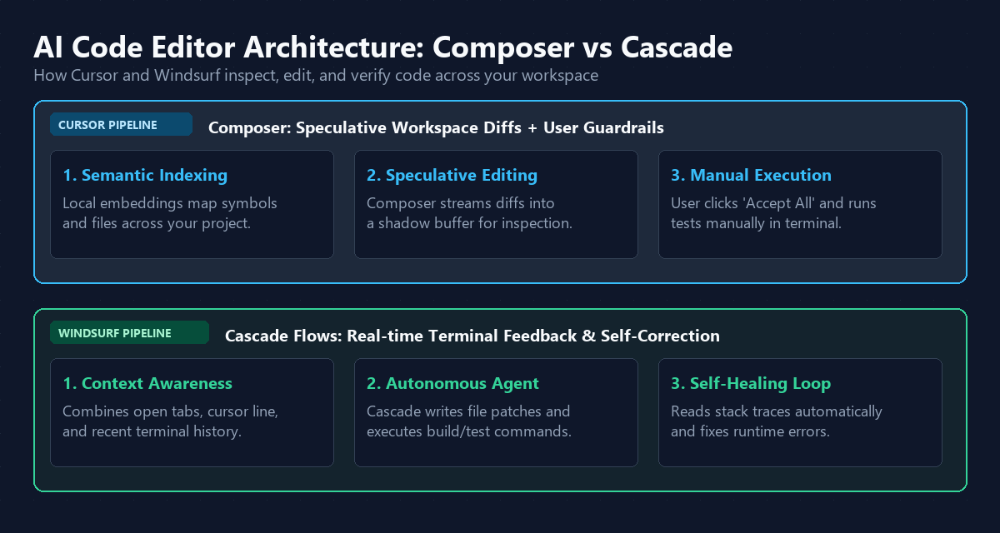

Cursor vs Windsurf: Which AI Code Editor Wins in 2026?
· 5 min read
A simple refactor should not waste five fast requests or break your git history. Yet thousands of developers pay twenty dollars every month for an AI code editor, watch a progress spinner crawl during peak hours, and spend their afternoon fixing hallucinations.
For two years, Cursor owned the AI-native editor market. Then Codeium launched Windsurf with its Cascade agentic flow. Now developers are divided: do you stay with Cursor, or switch to Windsurf?
Quick Summary (The Short Version)
- • Cursor wins on model choice and multi-file precision: It lets you toggle freely between Claude 3.5 Sonnet, GPT-4o, OpenAI o1, and DeepSeek, with a mature Composer interface that streams clear diffs.
- • Windsurf wins on agentic autonomy and terminal flow: Its Cascade engine watches your terminal output, reads error stack traces automatically, and fixes compile bugs without manual copy-pasting.
- • The catch: Both cost $20/month, both cap fast requests on heavy usage, and both struggle when prompted on messy codebases without explicit file boundaries.

The fundamental difference: Composer vs Cascade
Both tools are hard forks of VS Code. You get the same extensions, the same keyboard shortcuts, and the same debugger. What separates them is how their agentic brains talk to your project.
Cursor relies on Composer (Cmd+I). Composer generates multi-file diffs inside a shadow workspace. When you ask Cursor to add a Stripe checkout flow, it generates edits across your API routes, frontend components, and database schemas. You review red and green diffs side by side before clicking Accept. Cursor treats the developer as the flight controller: the AI suggests changes, but you run the terminal commands and test the output.
Windsurf relies on Cascade. Cascade is an autonomous agent loop. When you prompt Windsurf, Cascade does not just write files. It reads terminal output, runs npm run build, inspects the error trace, modifies your imports, and re-runs the build until the test passes. Windsurf calls this a Flow. It eliminates the tedious loop of copying terminal errors back into a chat window.

Head-to-head comparison
We tested both editors across a 15,000-line TypeScript and Rust monorepo. Here is how they stack up across daily developer requirements:
| Feature | Cursor (Anysphere) | Windsurf (Codeium) |
|---|---|---|
| Core Agent | Composer (Multi-file diff streams) | Cascade (Autonomous action loop) |
| Model Options | Sonnet 3.5, GPT-4o, o1, DeepSeek | Claude 3.5 Sonnet, GPT-4o, Codeium base |
| Terminal Integration | Manual review; click-to-run buttons | Automatic execution with real-time error capture |
| Workspace Indexing | Local embeddings + Shadow workspace | Real-time AST parsing + Tab tracker |
| Monthly Pro Pricing | $20/mo (500 fast requests, then queue) | $20/mo (500 prompt credits) |
| Offline / Local Models | Partial (Custom OpenAI API URL) | No (Requires Codeium cloud routing) |
| Best Suited For | Developers wanting maximum model choices & diff control | Developers wanting true autonomous self-healing loops |
Context retrieval on large codebases
Any AI assistant looks brilliant on a two-file Python script. The real test is a legacy repository with hundreds of modules, nested types, and undocumented dependencies.
Cursor excels at explicit symbol targeting. Its @ tagging system (e.g. @Files, @Folders, @Code, @Docs) gives you surgical control over what enters the prompt. When you index a repository, Cursor generates embeddings locally. If you tag @auth.ts and ask for a session check, it pins the exact interface definitions without filling the context window with junk.
Windsurf excels at implicit contextual awareness. Windsurf tracks your cursor position, recently closed files, and terminal scrollback without requiring constant @ tags. When you jump into a broken component, Windsurf frequently guesses the relevant utilities before you type their names. However, on large monorepos, Windsurf occasionally pulls too much extraneous context into Cascade, consuming credits faster than anticipated.
What breaks at 2 a.m.
Neither editor is magic. Both have sharp edges that will frustrate you under deadline pressure:
1. Cursor queue bottlenecks during US hours. Once you burn through your 500 fast requests, Cursor drops you into the standard pool. During peak afternoon hours, waiting 45 seconds for Composer to generate a diff destroys your coding momentum. You either pay extra for request packs or wait.
2. Windsurf runaway loops on failing tests. Because Cascade has terminal execution privileges, it can get trapped in a repair loop. If a test fails due to a missing environment variable, Cascade may attempt three consecutive code refactors trying to satisfy the test, burning through prompt credits before you intervene.
3. The dirty git tree hazard. Both editors will overwrite uncommitted work if you click Accept without reviewing diffs. Always keep a clean git tree before triggering multi-file agent refactors.
The third path: zero subscriptions
If you dislike paying $240 every year to Anysphere or Codeium, you are not trapped. Open-source developers have built compelling alternatives.
Tools like OpenCode run directly in your terminal, connect to your own API keys, or hook into local Ollama models with zero subscription fees. If you prefer working in Neovim or tmux, a terminal coding agent gives you agentic diffs without locked-in editor forks.
The verdict: which editor should you pick?
- Pick Cursor if: You want access to the widest selection of frontier reasoning models (o1, Sonnet 3.5, DeepSeek), prefer granular control over code diffs, and work across complex monorepos where explicit
@symbol targeting is essential. - Pick Windsurf if: You want an assistant that feels like a true autonomous junior engineer. If you hate copying terminal stack traces into chat windows and want an agent that fixes build errors in place, Windsurf's Cascade flow is unmatched.
Links: Cursor, Windsurf by Codeium, and our guide on OpenCode.
Hands-on tested: Cursor v0.43 and Windsurf v1.2 on macOS Sequoia and Ubuntu 24.04 on a 15,000-line full-stack repository.